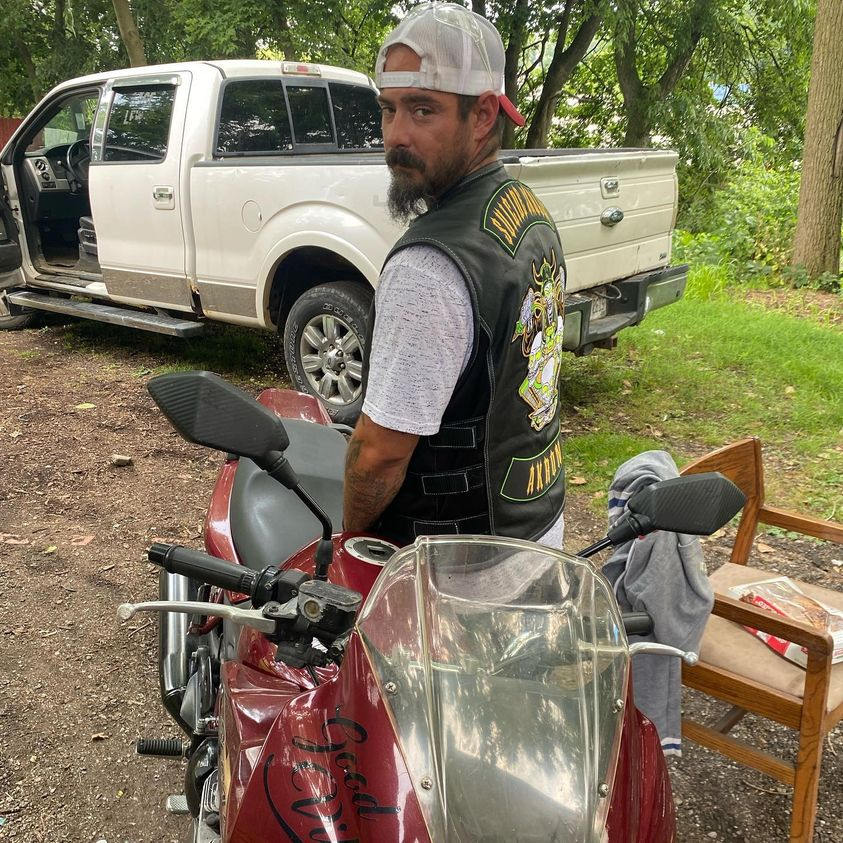

Timeline photos
Here’s a Josh update.
Josh rode up on his new motorcycle on Sunday. He went from being maybe the most hardcore homeless person I ever met to getting his license, driving a tow truck, getting back with his family (his middle daughter now lives with him). And now he’s got this new bike.
He also joined a biker club. (I forget the name and can’t totally make it out in this picture.)
They sound really cool. They are open to all races and women can wear patches.
I am generally a fan of clubs and gangs. Of course sometimes they come with some issues. But the community aspect of it is so important.
I believe community is at the core of being human. But capitalism drives us into isolation. And Covid just made it worse.
We really need to find our community. Biker clubs and street gangs are way ahead of most of us in this regard. If we’d accept them into traditional society I think we could help lessen the negative aspects of these groups.
But, as usual, humans alway fall back into their judgmental, critical lizard brain and hate anything that isn’t exactly like what they are doing at that particular moment in their lives.
YOU ROCK, JOSH.
Place: Akron, Ohio (41.0732, -81.5179)
Address: Akron, OH 44301